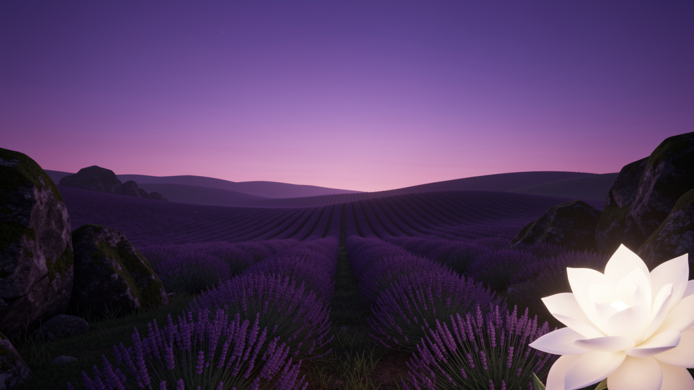

`.md` 파일 하나로 Claude에게 새로운 능력을 심는 공식 플러그인 시스템.
GitHub에서 무료로 배포되는 수천 개의 스킬을 2분 안에 설치하세요.
Anthropic이 Claude Code에 공식 도입한 확장 시스템. .md 파일로 만든 커스텀 명령을 Claude에게 가르쳐서, 특정 분야의 전문가처럼 작동하게 만듭니다.
.claude/skills/ 에 설치하면, Claude Code를 어디서 켜든 항상 켜져 있어요./skill-name 또는 @skill-name 으로 즉시 호출. 배우는 시간 없이 바로 씁니다.Claude Code CLI는 Node.js 위에서 동작합니다. 터미널이 아직 낯설어도 괜찮아요 — 아래 설치 파일을 받아서 실행하기만 하면 됩니다.
Windows Installer (.msi) 버튼 클릭 → 다운로드.msi 파일을 더블클릭 → Next를 계속 눌러 기본 옵션 그대로 설치 완료 (체크박스는 전부 기본값 유지 권장)$ node --version # v20.x.x 처럼 버전이 출력되면 성공 $ npm --version
macOS Installer (.pkg) 버튼 클릭 → 다운로드.pkg 파일을 더블클릭 → 안내에 따라 계속을 눌러 설치 완료brew install node 한 줄로도 설치됩니다.$ node --version # v20.x.x 처럼 버전이 출력되면 성공 $ npm --version
터미널(명령 프롬프트)은 명령어를 타이핑해서 컴퓨터에 직접 지시를 내리는 창입니다. 처음엔 낯설어도 아래 방법 중 하나만 알면 충분해요.
powershell 입력 후 Enterpowershell 입력Windows Terminal 입력Terminal → New TerminalTerminal 입력 후 EnterTerminal.app 더블클릭스킬을 쓰려면 먼저 Claude Code CLI 자체가 설치되어 있어야 합니다. Node.js가 필요하고, 설치 후 로그인 한 번만 하면 끝이에요.
$ node --version # v18.0.0 이상이면 OK
$ npm install -g @anthropic-ai/claude-code
$ claude --version 2.1.143 (Claude Code)
claude 명령어를 실행하면 브라우저가 열리면서 로그인 화면이 뜹니다. Claude Pro/Max 구독 계정으로 로그인하거나, API 키를 쓰려면 아래 명령어를 사용하세요.# 구독 계정으로 로그인 (브라우저 OAuth) $ claude # API 키로 로그인하려면 $ claude auth login --console
claude auth status 로 정상 연결됐는지 확인하세요.$ claude doctor
Claude Code가 설치된 환경에서 진행하세요. 가장 빠른 건 방법 A — 명령어 한 줄이면 끝납니다.
marketplace add)한 뒤 설치(plugin install)하는 2단계입니다.# 예시: Marketing Skills 설치 $ claude plugin marketplace add coreyhaines31/marketingskills $ claude plugin install marketing-skills@marketingskills # Superpowers 설치 $ claude plugin marketplace add obra/superpowers $ claude plugin install superpowers@superpowers-dev # GitHub 저장소를 스킬로 바로 설치하고 싶다면 (marketplace 구조가 없는 경우) $ npx skills add remotion-dev/skills -a claude-code -g -y
claude-code가 아니라 claude로 시작합니다 (npm 패키지명과 실행 명령어가 다릅니다)./skill-name으로 호출할 수 있어요.git status, 테스트 결과 등)이 그대로 모델 컨텍스트에 들어가는 걸 압축해서 넘겨주는 오픈소스 CLI 프록시예요. Claude Code, Cursor는 물론 Hermes도 공식 지원합니다.# 설치 (macOS/Homebrew) $ brew install rtk # Claude Code / Copilot용 초기화 $ rtk init -g # Hermes용 초기화 $ rtk init --agent hermes # 설치 확인 + 절감량 대시보드 $ rtk --version $ rtk gain
rtk gain으로 직접 측정해서 확인하는 걸 권장합니다. (GitHub ⭐74,000+, Apache 2.0 라이선스 · rtk-ai/rtk →)# 1. GitHub Releases에서 rtk-x86_64-pc-windows-msvc.zip 다운로드 후 압축 해제 # https://github.com/rtk-ai/rtk/releases # 2. 압축 푼 rtk.exe를 PATH에 있는 폴더로 이동 (예: C:\Users\<내계정>\.local\bin) # 3. 초기화 — 네이티브 바이너리 훅 설치 (Claude Code / Copilot) $ rtk init -g # Hermes용 초기화 $ rtk init --agent hermes # 설치 확인 $ rtk --version $ rtk gain
ripgrep(rg)을 필요로 해요 — 없으면 winget install BurntSushi.ripgrep.MSVC로 설치해두면 경고가 안 뜹니다. WSL 사용자는 macOS/Linux와 동일하게 curl -fsSL .../install.sh | sh 한 줄이면 됩니다.# 전체 적용 (홈 폴더) ~/.claude/skills/스킬이름/SKILL.md # 프로젝트만 적용 (현재 폴더 내) .claude/skills/스킬이름/SKILL.md
/스킬이름 으로 바로 호출하세요. SKILL.md 안에 정의된 모든 커맨드가 활성화됩니다.$ git clone https://github.com/alirezarezvani/claude-skills # ⭐ 23,000+ · 348개 스킬 모음집
~/.claude/skills/ 로 복사하면 됩니다.$ cp -r claude-skills/marketing ~/.claude/skills/marketing $ cp -r claude-skills/finance ~/.claude/skills/finance ✓ Done! 2 skills installed
GitHub 스타 수·설치 수·커뮤니티 반응 기준으로 추린 실존하는 스킬들입니다. 전부 무료예요.
Claude Code는 조직 단위 클라우드 동기화가 없어서, 팀원 각자 로컬에 스크립트 한 번 돌리면 끝나는 방식이 가장 빠릅니다. 아래 스크립트는 이 페이지에서 소개한 스킬 12종을 전부 자동 설치합니다.
# PowerShell에서 실행 (cmd가 아닌 PowerShell 창이어야 합니다) $ irm https://yeaurpoong-think.github.io/claude-skills-guide/install-org-skills.ps1 | iex
Set-ExecutionPolicy RemoteSigned 실행 후 다시 시도하세요.# SR바이오텍 조직 스킬 일괄 설치 $ curl -fsSL https://yeaurpoong-think.github.io/claude-skills-guide/install-org-skills.sh | bash
$ curl -fsSL https://yeaurpoong-think.github.io/claude-skills-guide/install-org-skills.sh # macOS/Linux용 원문 $ curl -fsSL https://yeaurpoong-think.github.io/claude-skills-guide/install-org-skills.ps1 # Windows PowerShell용 원문
SKILL.md 파일을 만들어 GitHub에 올리면 바로 배포됩니다. Anthropic 공식 문서에 스킬 작성 가이드가 있어요.